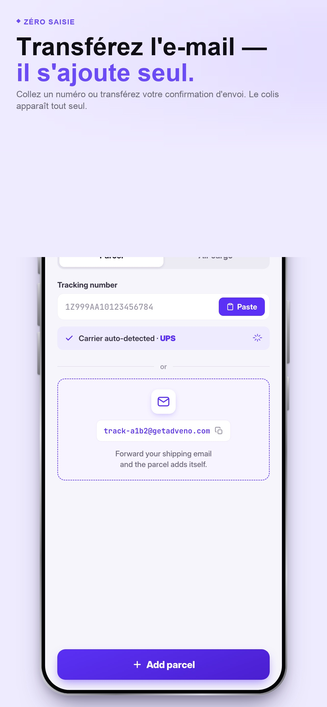

Ajoutez un numéro
Saisissez un numéro de suivi, scannez un code ou utilisez une capture d’écran pour ajouter un colis.
Suivi de colis
Rassemblez les numéros de suivi de vos colis dans une liste claire et consultez les étapes communiquées par les transporteurs.
Télécharger sur l’App StorePour iPhone · iOS 17 ou version ultérieure · Achats intégrés

Dans l’app
Saisissez un numéro de suivi, scannez un code ou utilisez une capture d’écran pour ajouter un colis.
Retrouvez vos colis et leur historique de suivi sans éparpiller les numéros entre plusieurs messages.
Consultez les informations de statut et programmez vos rappels personnels pour les colis suivis.
Des offres Premium sont proposées dans l’app. Consultez les modalités d’accès, les formules et les prix locaux affichés avant tout achat.
La disponibilité des données, leur actualisation et les délais dépendent du transporteur. Adveno ne transporte pas les colis et ne garantit pas une date de livraison.
L’app est disponible en français. Les écrans présentés restent des exemples ; ils ne constituent pas des résultats de livraison.
Ouvrez la fiche officielle et les offres disponibles sur l’App Store.